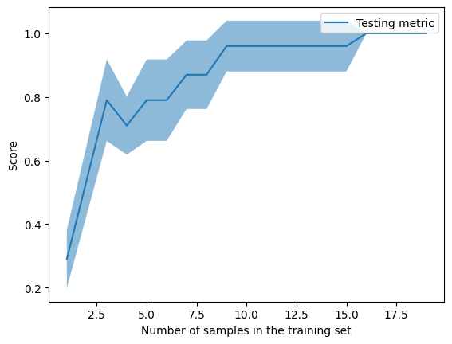

C = [1,4,2,2,4,2]
df = pd.DataFrame({'A':[1,2,3,4,5,6], 'B':[1,3,5,5,3,1], 'C1':C, 'C2':C})PCA
Some tests with PCA
df| A | B | C1 | C2 | |
|---|---|---|---|---|
| 0 | 1 | 1 | 1 | 1 |
| 1 | 2 | 3 | 4 | 4 |
| 2 | 3 | 5 | 2 | 2 |
| 3 | 4 | 5 | 2 | 2 |
| 4 | 5 | 3 | 4 | 4 |
| 5 | 6 | 1 | 2 | 2 |
zero_mean = df - df.mean()
np.linalg.eig(zero_mean.cov())(array([2.25783424, 4.13294994, 3.30921583, 0. ]),
array([[ 4.38595999e-01, -6.90751652e-01, -5.74887558e-01,
-4.06759704e-18],
[ 4.62601343e-01, -3.74906474e-01, 8.03396000e-01,
-1.14581450e-16],
[-5.44808933e-01, -4.37211213e-01, 1.09679448e-01,
-7.07106781e-01],
[-5.44808933e-01, -4.37211213e-01, 1.09679448e-01,
7.07106781e-01]]))#not timed
pca = PCA(n_components=4)pca.fit(zero_mean)
pca.components_2.61 ms ± 400 µs per loop (mean ± std. dev. of 7 runs, 100 loops each)print(pca.explained_variance_, pca.singular_values_, sep='\n')[4.13294994e+00 3.30921583e+00 2.25783424e+00 7.51030182e-33]
[4.54584972e+00 4.06768720e+00 3.35993619e+00 1.93782118e-16]
CPU times: total: 0 ns
Wall time: 0 nsnp.matmul(zero_mean.corr(), pca.components_.T)/pca.singular_values_| 0 | 1 | 2 | 3 | |
|---|---|---|---|---|
| A | -0.193928 | 0.129562 | -0.059770 | -0.193283 |
| B | -0.117592 | -0.207353 | -0.078473 | -0.607407 |
| C1 | -0.240572 | -0.059146 | 0.270675 | -0.572923 |
| C2 | -0.240572 | -0.059146 | 0.270675 | -0.572923 |
pd.DataFrame(pca.components_.T)| 0 | 1 | 2 | 3 | |
|---|---|---|---|---|
| 0 | -0.690752 | 0.574888 | -0.438596 | 0.000000e+00 |
| 1 | -0.374906 | -0.803396 | -0.462601 | -1.110223e-16 |
| 2 | -0.437211 | -0.109679 | 0.544809 | -7.071068e-01 |
| 3 | -0.437211 | -0.109679 | 0.544809 | 7.071068e-01 |
i=0
#np.dot(np.matmul(zero_mean.corr(), np.transpose(pca.components_[i][:,np.newaxis])), pca.components_[i])/pca.explained_variance_[i]proj = []
for i in range(4):
proj.append(np.outer(np.dot((df - np.mean(df,axis=0)).to_numpy(), pca.components_[i]),pca.components_[i][:,np.newaxis]))[np.linalg.norm(p) for p in proj][4.5458497197998735,
4.067687196947729,
3.3599361887962864,
6.544668208791957e-16]trial_df = pd.concat([df,df,df,df,df,df,df,df], ignore_index=True)trial_df['B'].value_counts()1 16
3 16
5 16
Name: B, dtype: int64Trials on LearningCurveDisplay
X_train, X_test, y_train, y_test = train_test_split(trial_df.drop(columns=['B']), trial_df['B'], test_size=0.5, random_state=42, stratify= trial_df['B'])
tree = DecisionTreeClassifier(random_state=42)
LearningCurveDisplay.from_estimator(tree, X_train, y_train, train_sizes=np.linspace(0.1, 1.0, 16))
plt.show()
CPU times: total: 938 ms
Wall time: 1.27 s